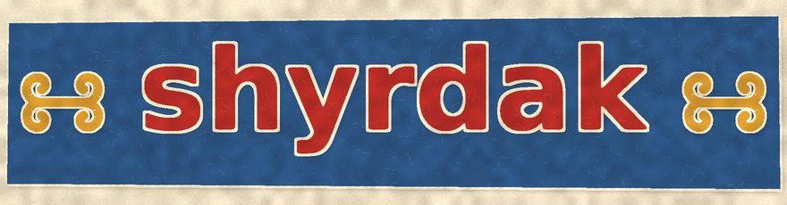
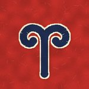
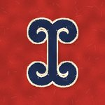
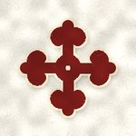
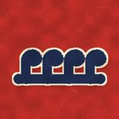

apa's felt carpets from Almaluu, and a loom for yours
These are the motifs apa uses. What they "mean" is what apa says, and what her mother said; other women say other things, and every clan in the mountains has its own way of drawing them. I'm a textile student, not a historian, so this page is about our house only. If your grandmother says different, write it in the guestbook!

ram's horn
The first one every girl learns, and the one on almost everything. Apa says it is for plenty: a ram means a flock, a flock means a family that eats. Put it everywhere and you won't be poor. Turn four of them to the middle and you have a square, and that's a carpet.

double horn
Two ram's horns back to back. Apa says it's for a couple: one looks up, one looks down, they hold one stem. Good for a wedding carpet. My mother's has them.
horse track
The horse's track. The same motif is embroidered on the women's chest panels in the mountains, with the ram's horn and the cross. Apa says it means the road, and guests on it: a house with horse tracks at the door is a house people come to.

the flower
Gül means flower, but it's a cross: four arms, three points at each end, a little ring in the middle. Apa learned it from a woman from the Chatkal, where the felt-makers call it their flower. Apa puts it on white felt only.
amulet
A triangle, like the little amulet cases people sew. For protection: on a baby's cradle felt, on the threshold carpet. Apa says don't ask what it protects from, just make it.

water
Water: the running hooks. Mostly for the border, so the carpet has a river round it. Apa says a border keeps the good inside. Without a border a carpet is 'like a house without a fence'.
Two colours make a shyrdak; a third one is the cord. The cord should fight a little with both, says apa: "if the cord agrees with everybody, nobody sees it".